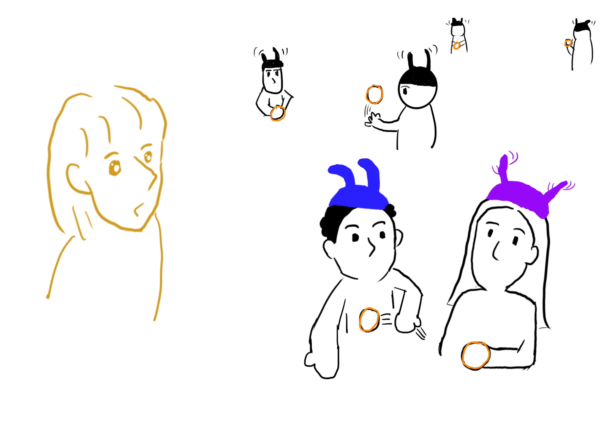
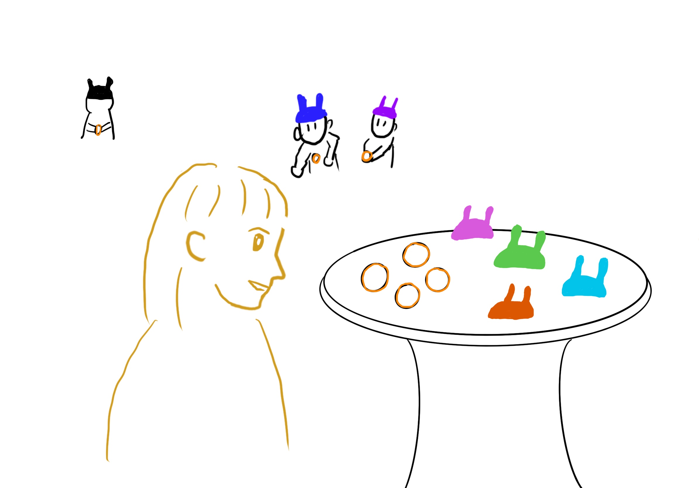
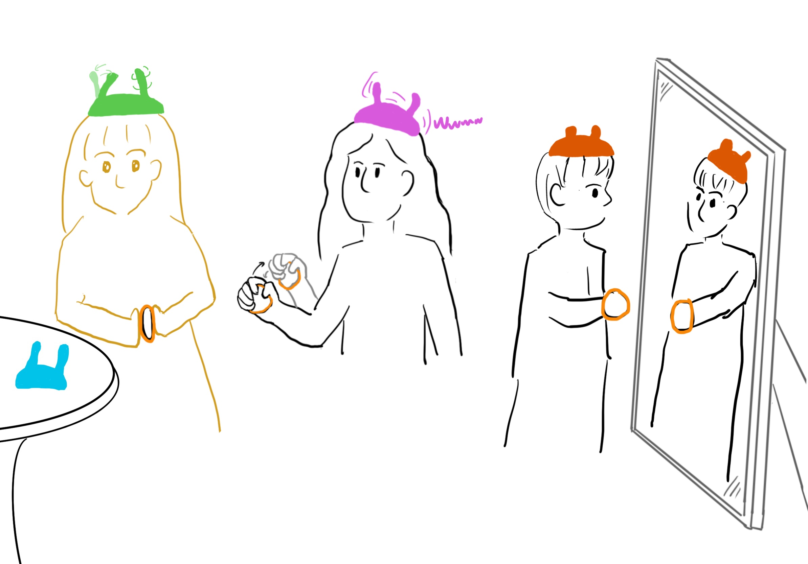
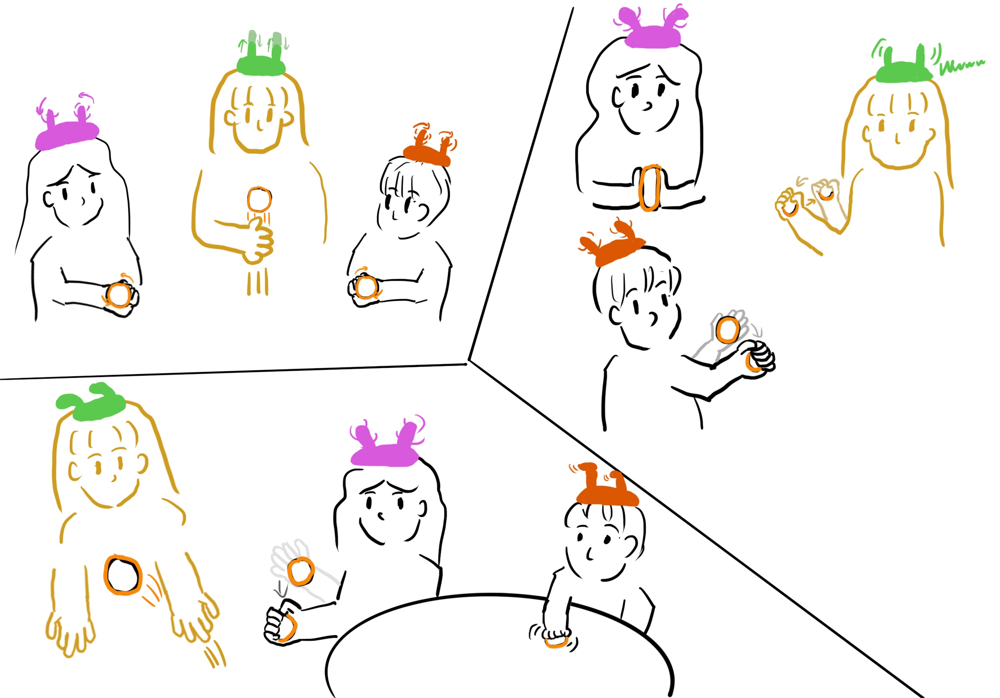
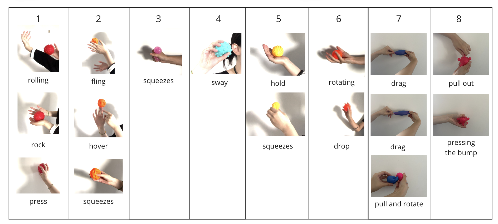
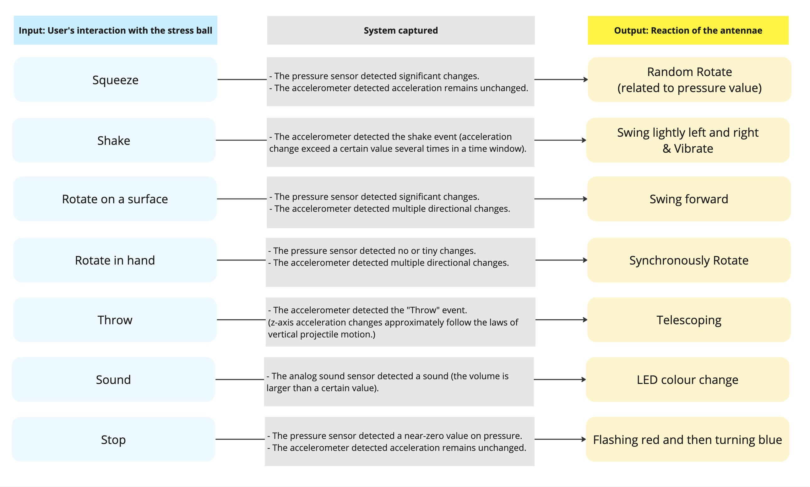
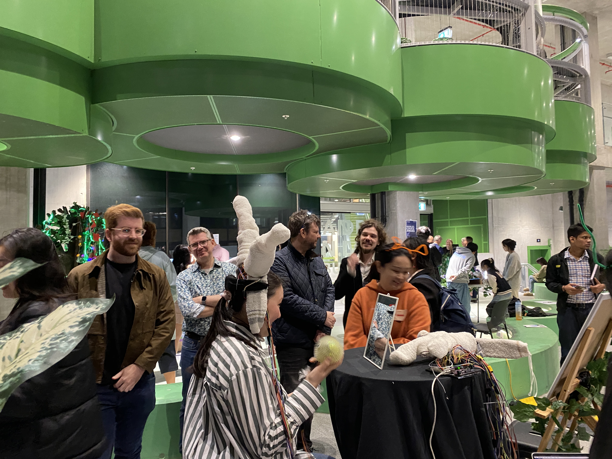
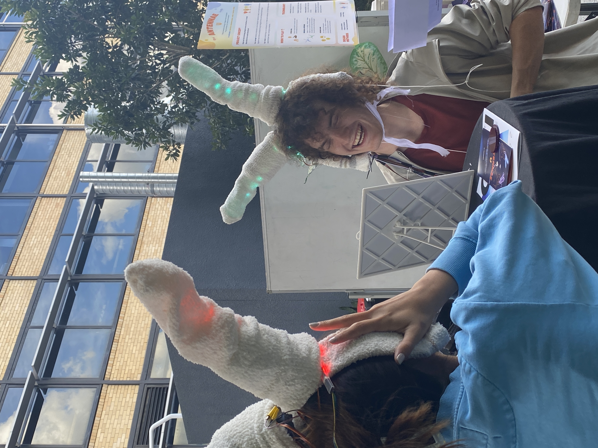
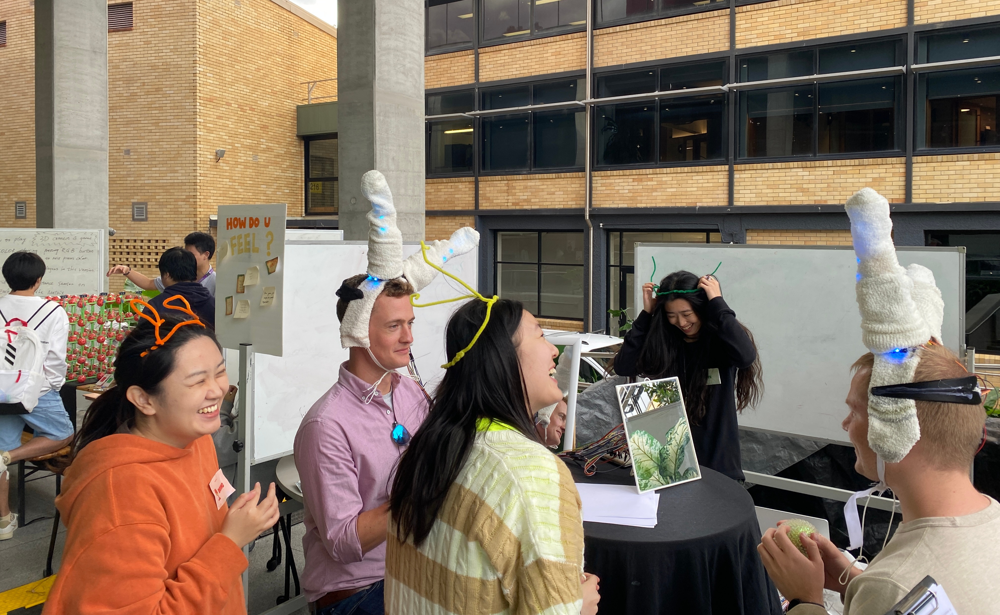
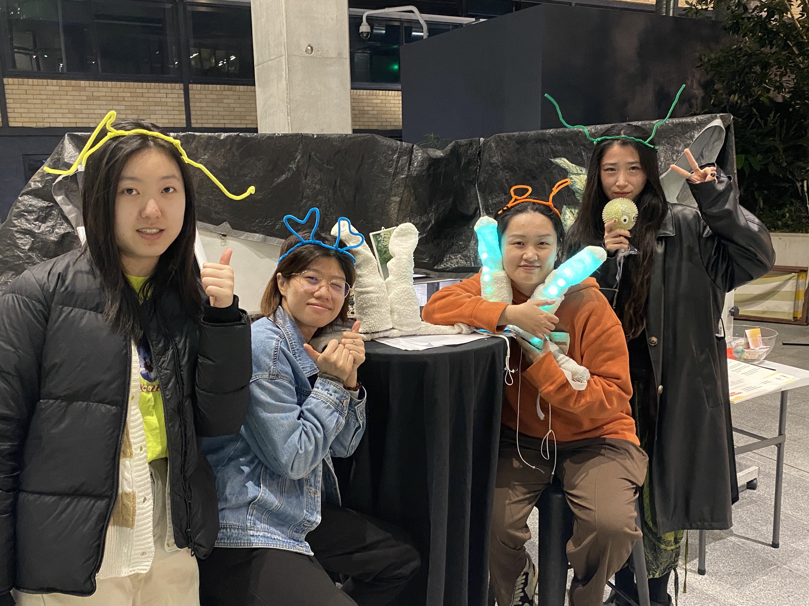

Antenna U
THE BRIEF
"Antennae U" inspired by insect communication, where users can express and sense social presence through gesture-driven antenna movements rather than spoken language.
THE INSIGHT
People often express emotions and social intentions through subtle, instinctive body gestures, but these signals are easy to miss in everyday interaction.




UX DESIGN
We designed the interaction around natural, tactile gestures. By pressing, shaking, throwing, or rotating a stress ball, users could intuitively control the antennae’s movements and colour changes, turning subtle body actions into playful non-verbal signals. Through our “Guess the Emoji” testing game, we explored how users interpreted these signals and how ambiguity could encourage curiosity, communication, and social connection.


RESULTS
The final prototype was a wearable antenna system that translated users’ gestures into expressive movements and colour changes. Presented at the final exhibition, Antennae U invited visitors to explore a playful, language-free form of social interaction and received third place in the People’s Choice Award.




